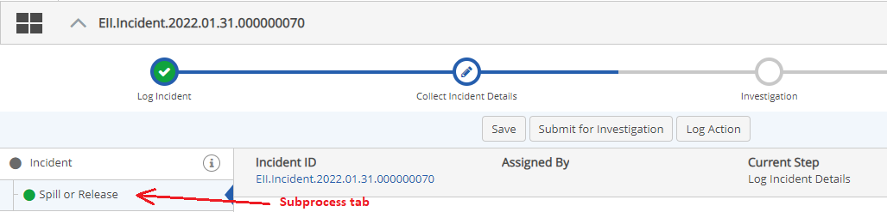

Advanced Workflows (WAB) solutions may include a secondary workflow or sub-process. A sub-process is a child workflow of the primary App workflow. A button will be available at the top of the screen to initiate the sub-process at the designated step(s). Corrective Actions that are created directly from the primary workflow are an example of a sub-process.
Once a sub-process is initiated, it will be displayed as a tab from the main record. Sub-processes may also themselves have child workflows, such as their own related Actions, which are grandchildren of the primary App workflow. When actions have been created for a sub-process, they are displayed inline in the tab for the sub-process.
To create a sub-process:
Select the button from the top of the screen to initiate the sub-process.
In the example shown below from the Advanced Workflows (WAB)-based IncidentApp, an Incident workflow contains a sub-process to provide Spill or Release Details, when the "incident type" is Spill or Release.
The form for the sub-process is displayed as a tab.

Complete the form and click Save to save your changes. You can use the Save button at the bottom of the form or at the top of the page.
Alternatively, you may be able to assign the workflow to another person using the Assign Workflow button.
To create a related action for a sub-process:
Click the Create Action button at the bottom of the form (wording may vary).
Complete the form to create the new action.
Click Request Action.
Select an assignee and click Assign.
Actions (or other workflows) initiated from a sub-process will appear inline in the Details tab. To edit or complete the action, click the gear icon next to the action.